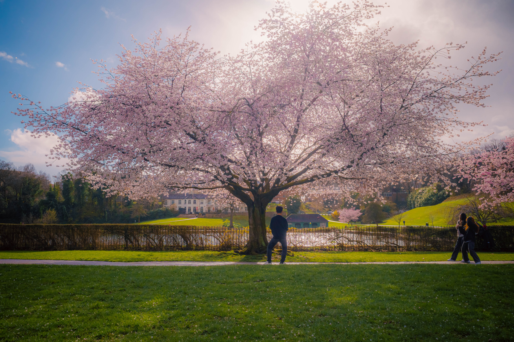

Changing Our Perception Through Photography
I think for many people, photographing is something of a reactive act. By which I mean the impulse to photograph often comes in reaction to something that happens to or around them. A pretty sunset over a picturesque landscape, say, or perhaps a unique moment with a loved one can be examples of the trigger necessary for one to pull the phone out and take a photo. And of course, these are beautiful reasons to take a photo. But I think photography could be most powerful when it is used with more intentionality.
Many photographers will likely understand this. Just the act of picking up the camera which, unlike a smartphone, is a device designed solely for the purpose of making photos, is an act of intention – you intend to make photos. And in the act of photographing itself, a great amount of effort is put in to each photograph. Visual rules are used to create compositionally pleasing images; interesting use of light and shadow are employed to bring attention to particular areas of an image; and colour can be sought that expresses a certain mood, or has in it visually pleasing elements (such as colour contrasts). And this is saying nothing of much post-production editing that photographers use to further enhance the stories told in their photographs.
It's not that photographers do not react, of course. In fact, reactivity in photography is still an important element, and perhaps the best images come when intention meets reaction. This is often the case in street photography, for instance. The photographer has their camera settings just right, they have aligned themselves and their camera to create a beautiful scene, and now they wait for an interesting subject or moment to make an appearance within that scene.
But there is another point I want to make here on the importance of intention in photography, and that is in its power to recreate our sense of perception. I'll use a recent example of a personal experience to illustrate how photography has helped change my own perception.
My hometown, Sheffield, was a city I had developed mostly negative feelings for. I'd lost close family members and a good friend there in a series of tragic incidents, and so returning to Sheffield would bring to the fore those memories, along with a strong sense of loss. Visiting the city felt like being inside a ghost town – everything is there, as I remember it, but all the life of the place was gone.
During a recent stay over in Sheffield, with a perpetual angst to leave the city, I found an escape through the viewfinder of my cameras. I would go out most days to photograph the streets of Sheffield. And in the process, I was slowly and unconsciously reshaping my perception of the city.
There were some days in which all I wanted was to express the distress I was experiencing internally. And I was able to do that by creating photos that had in them that sense of distress. Making blurry, long exposure shots, for instance, was something I did often, almost to convey the feelings of confusion and disorientation I was experiencing.
But there were other days where I wanted to go and create the most gorgeous images I could. I would travel to parts of the city I had never before visited, during the most beautiful times of the day (golden hour!), to make a photograph. And in the process met new people too (cameras in public places can often grab the attention of others), providing me with friendly new faces to associate with the city.
By being intentional with my photography I was beginning to understand myself in relation to Sheffield and all that had occurred there in the past. And I was discovering new aspects to Sheffield; new people and places, and even new history and stories. The photographs became an externalisation of my inner feelings, whilst also showing me multiple other sides to the city I had never before seen.
I'm now able to sift through all the photos I made in Sheffield and see the city with different eyes. The colours and textures of the city, which I had never before paid much attention to, have now added a new layer of colour and texture to my own view of Sheffield. And it's not that the memories have faded, or that the distress has vanished. It's rather that I now have an updated, more complex and multifaceted perception of the place, and a deeper understanding of how my experiences there have created the person I am today.
And I think this applies to many places, people, and perceptions. The act of photographing, with intentionality, with purpose, is to alter your perception towards a direction of your choosing. If you choose to photograph beautiful scenes, you will come to see an environment as more beautiful. If you choose to photograph ugly scenes, you may see the environment as more ugly. But you may also gain a deeper understanding on what it is about the place that you find uncomfortable or unpleasant. An opportunity to closer inspect what it is inside of you that is driving you to make those disorienting or unappealing photographs. A real journey of self-discovery, perhaps.

♦